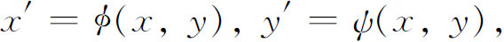
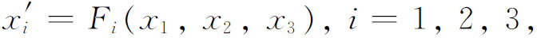
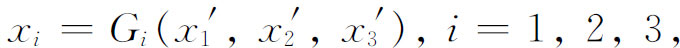
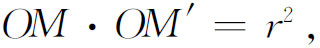
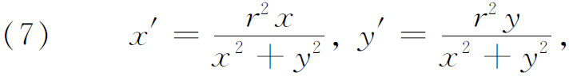
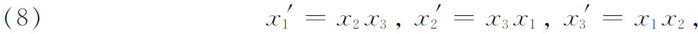
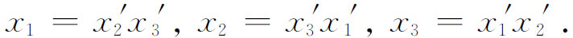
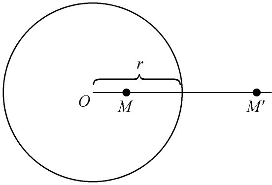
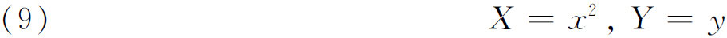

3．双有理变换概念
在第35章我们看到，主要是在19世纪30年代与40年代之间，射影几何的研究工作转向高次曲线。然而，在这个工作进行得还不甚深入以前，研究的性质有了改变。射影观点就是齐次坐标线性变换的观点。二次与高次的变换逐渐起作用，重点转向双有理变换。在两个非齐次坐标的情形，这个变换具有形式

其中φ与ψ是x，y的有理函数，并且x，y可表示为x′与y′的有理函数。齐次坐标x1，x2与x3的变换式为

其逆变换为

其中Fi及Gi是各自变量的n次齐次多项式。除了有限多个点可能各对应于一条曲线之外，对应是一对一的。
关于圆的反演，可以作为双有理变换的例子。从几何上讲，这个变换（图39.1）把M变到M′，或把M′变到M，定义它的方程是

其中r是圆的半径。从代数上讲，若在O点建立一个坐标系，则由毕达哥拉斯定理导出

其中M是（x，y），M′是（x′，y′）。在这个变换下圆变到圆或变到直线，并且可以反过来变。反演是把全平面变到自身的变换，这样的双有理变换称为克里摩拿变换。三个（齐次）变量的克里摩拿变换的例子是二次变换

其逆是


图39.1
双有理变换这个术语也用于更广泛的意义，即把一曲线上的点变到另一曲线上的点的变换是双有理的，但在全平面的变换不必是双有理的。例如：（非齐次坐标）变换

在全平面不是一对一的，但是确实把y轴右边的任一曲线C以一对一的对应方式变到另一曲线。
反演变换是出现的第一个双有理变换。在一定情况下彭赛列在他1822年的《论图形的射影性质》中曾用过它，尔后又被普吕克、施泰纳、凯特尔和路德维格·马格努斯（Ludwig Immanuel Magnus，1790—1861）等人用过。它曾为默比乌斯(22)详尽地研究过，其在物理上的应用为开尔文（Kelvin）勋爵(23)及刘维尔所认识(24)，后者把它称之为半径互为倒数的变换。
在意大利几个大学当数学教授的克里摩拿（Luigi Cremona，1830—1903），在1854年引进一般的双有理变换（把全平面变到自身）并写过多篇有关的重要论文(25)。马克斯·诺特（Max Noether，1844—1921），埃米·诺特的父亲，证明了这样一个基本结果(26)：一个平面克里摩拿变换可由一系列二次的及线性的变换构成。罗萨内斯（Jacob Rosanes，1842—1922）独立地发现这个结果(27)，还证明了所有平面上的一对一的代数变换必然是克里摩拿变换。马克斯·诺特和罗萨内斯的证明由卡斯泰尔诺沃（Guido Castelnuovo，1865—1952）(28)加以完善。